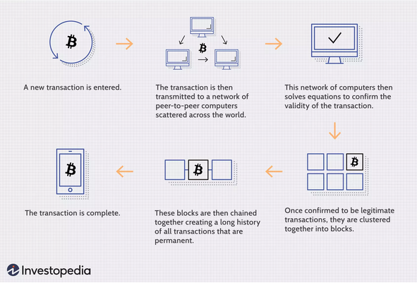
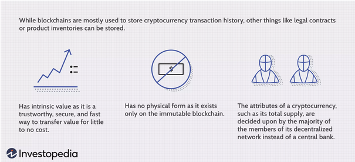

Blockchain and Cryptocurrencies
What are blockchains and cryptocurrencies and what do they do?
Blockchain and cryptocurrency were first created back in 2009 by an unknown group of developers or a single developer who call themselves Satoshi Nakamoto. The first cryptocurrency to be created was “Bitcoin” and was created by the Satoshi Nakamoto group. In the year of 2014 blockchain 2.0 technology was created to support different formats of use instead of just cryptocurrency, it was then that it developed even further to support multiple different programming designs to which came the creation of smart contracts, smart asset management and data authentication and verification (History of blockchain, 2021).
Blockchain is a unique type of database, it is an open decentralized ledger that collects information and stores it and is quite different to a generic database. A generic database stores its information or data in tables whereas a Blockchain database stores its information or data together in a block that is chained together (Conway, 2021). When a block is created it gets an exact timestamp of when the data is implied and then it is added to the chain. Bitcoin cryptocurrency is a type of blockchain made up of data blocks created from a database. This database cannot be altered, faked or hacked (Euromoney Institutional Investor PLC, 2021).
A cryptocurrency is a virtual form of currency or token that can be traded online for-profit like an investment or sent to other community members or companies for goods and services. To obtain a cryptocurrency, you need to purchase it online from a crypto exchange by exchanging verified currency for the token. Cryptocurrency, as stated above, works on blockchain technology and as it is purchased and sold the transactions are recorded and implemented in the blockchain of data. There are over 10,000 different cryptocurrencies and virtual tokens traded today. (Royal, 2021). Bitcoin has been the most popular cryptocurrency and continues to be since the evolution of blockchain cryptocurrency creation. Ripple (XRP), Ethereum (ETH), Dogecoin (DOGE) and BNB (Binance) are now alongside Bitcoin (BTC) with popularity today however these cryptocurrencies have not been anywhere near Bitcoin’s current trading price of $45,000 (11/07/21) to date.
Blockchain can be created using multiple different programs. Most blockchain databases run on C++ for their speed, endurance and security, Bitcoin was created using C++ to develop the blockchain. Some examples of these programs used are JavaScript, Python, Ruby and Java. You can use multiple programs together to create a more powerful blockchain database (Nday, 2021). To be able to create a blockchain from scratch there are a few steps that need to be followed. The first step is to choose which suitable application the blockchain will be created for either data authentication, smart contracts or smart asset management. Step two is to implement a fault-tolerant mechanism otherwise known as a consensus mechanism. Step three is to choose a platform to use for your blockchain database and depending on what mechanism you chose in step two you will need to consider what is more suitable. Step four is creating the node and whether it will be a cloud-based node or an on-site node. Step five is configuring how the platform will be configured using different elements. Step six is building the application programming interface (API) most of these API’s are already developed while other more technical APIs are not. Step seven is developing the admin and user interface by using a program as stated above alongside external databases and servers. Step eight and the final step is adding other tech features like biometrics, machine learning and or AI (Nagpal, 2017).
Here is an example of how blockchain and cryptocurrencies work -
(Investopedia, 2021)
Here is an example of the characteristics of cryptocurrency -
(Investopedia, 2021)
What is the likely impact of blockchain and cryptocurrency?
Blockchain and cryptocurrency could have a huge impact on the current and future world. Today’s climate change could be reversed using hybrid smart contracts. Hybrid smart contracts are software programs that use blockchains to interact with real-world data. This can be achieved by using satellite images. Communities and businesses can get involved by planting new trees or vegetation on their land to help the carbon footprint, provided they are involved in a certified program. The satellite then takes an image of the location the tree has been planted and reports it back through the blockchain. Once the data has been taken from the blockchain and put into the smart contract the rewards are given out via the program (Chainlink, 2021). Therefore, blockchain can have a huge impact on the global climate.

(Chainlink, 2021)
Cryptocurrency has started an entirely new job industry; this involves cryptocurrency exchange supervising and exchange maintenance. The cryptocurrency advancement has changed a lot of things since the rise of Bitcoin. The impact it is having on larger corporations due to fast and low-cost transactions have caused a heavy hit to the big players, but do we think that the banks should control our money all the time? Cryptocurrency transactions eliminate the need for a middleman by working on a 1 to 1 basis, letting you directly receive and send crypto to another user, letting the user have ultimate control on their currency. Then there are investments in the crypto world, where most investors are turning away from generic investments and investing more and more in cryptocurrencies. Investors are starting to increase their portfolios by 3-4% with cryptocurrencies such as Bitcoin and Ethereum (Ullah, 2021). This shows how much cryptocurrency is already having an impact on larger corporations whether it be by losing everyday customers or losing investors.

(Fibo Group, 2021)
How will this affect me?
I believe that the world is so ever-changing in the way technology is used, the way that we all interact at this present time with traditional currency and digital currency is going have a huge impact on the older generation and not so much the younger generation in years to come. When cryptocurrency and blockchains start developing with even more complexity in the next 5 to 10 years the people who do not get on board now will have a hard time trying to adapt to the new era. I do not believe that it will affect me in any way negatively apart from the older generation in my family that do not trust the online world of computing and would rather have their money stored at a bank as there is no safety net if one of their transactions is sent to the wrong person by mistake (Cointelegraph, 2021). In my opinion this is something that the world should be moving towards, for example being able to use this technology to have a better healthcare system, for patient records on the most secure system with only authorized access to it, which is called a medicalchain (Reiff 2019). I also believe if we can move away from traditional currency and allow for digital currency to take over that there would be a lot less corruption in larger corporations and even smaller corporations hopefully taking away fraud and counterfeit money. All in all, I think that the future is now with this type of technology, and we can only keep building it from here, hopefully creating cleaner Earth and a more secure world through the help of blockchain technology.

(CyberBahn Federal Solutions, 2021)